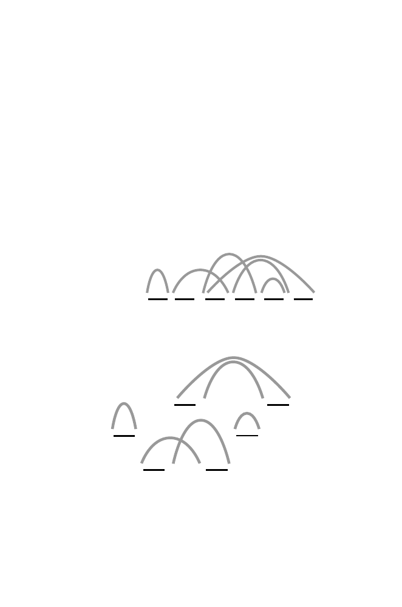

5.2 Permutations
131
5.2.3 Estimating Reversal Distances Between Two Permutations
Up to now, we have been determining the reversal distance
d
(
G, I
) between
permutation
G
and the identity permutation
I
. Now suppose that we have
the two permutations
F
and
H
, with the following elements:
F
:
1 2 4 5 3
H
:
1 4 3 5 2
.
The distance between
F
and
H
,
d
(
F, H
) and ˜
d
(
F, H
), is calculated just as
was done above, except that this time the second set of edges will not be drawn
connecting vertices in increasing numerical order but instead
in the order
in which these vertices appear in
H
. For simplicity, we again represent each
element by its numerical index and, as before, we extend each permutation
by prefixing it with 0 and by adding
n
+ 1 at the end (6 in this case). We
connect the vertices of
F
with black edges, taking vertices in succession as
they appear in
F
. Then we add grey edges between vertices,
taking them in
the order in which they appear in
H
. The result is:
Γ
(
F',H'
):
0
1 2 4 5 3 6
The decomposition of this graph into the maximum number of edge-disjoint
cycles is:
0
1
1
2
4
5
5
3
2
4
3
6
Since Γ(
F
, H
) can be decomposed into a maximum of four cycles, ˜
d
(
F, H
) =
5 + 1
−
4 = 2, and we expect that
F
can be transformed into
H
with two
reversals. This is shown in the following diagram: